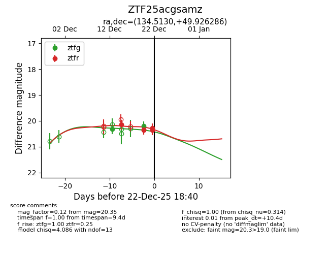
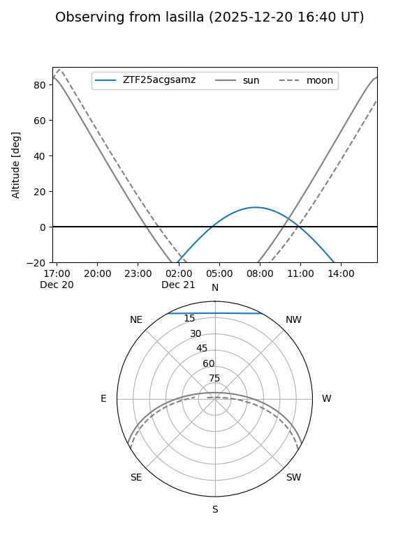
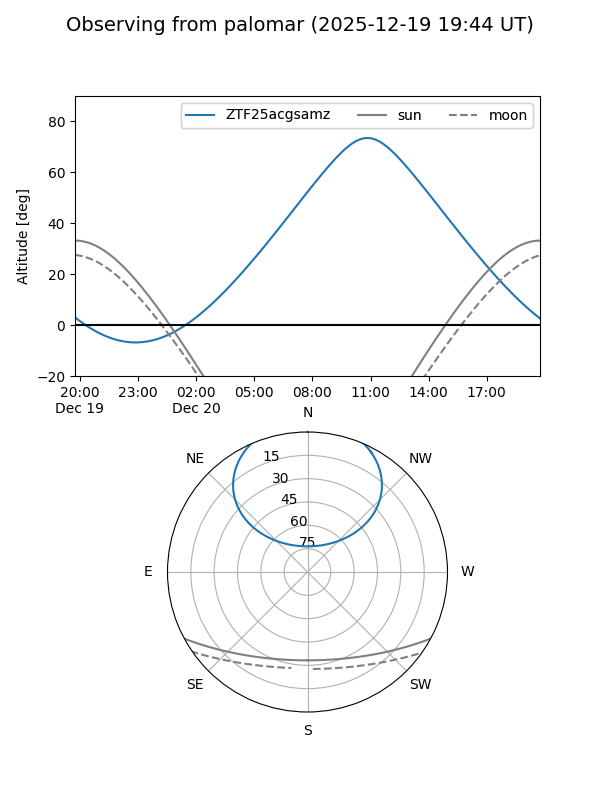

ZTF25acgsamz
Target ZTF25acgsamz at 2025-12-18 11:18
Aliases and brokers:
FINK: fink-portal.org/ZTF25acgsamz
Lasair: lasair-ztf.lsst.ac.uk/objects/ZTF25acgsamz
ALeRCE: alerce.online/object/ZTF25acgsamz
alt names
ZTF25acgsamz (ztf,fink_ztf)
Coordinates:
equatorial (ra, dec) = 134.5130,+49.92629
equatorial (HMS+DMS) = 08:58:03.12,+49:55:34.63
galactic (l, b) = (169.0521,+40.51145)
Photometry
last ztfg=20.31, ztfr=20.15
1 ztfg, 1 ztfr detections
Lightcurve

Visibility


Additional plots